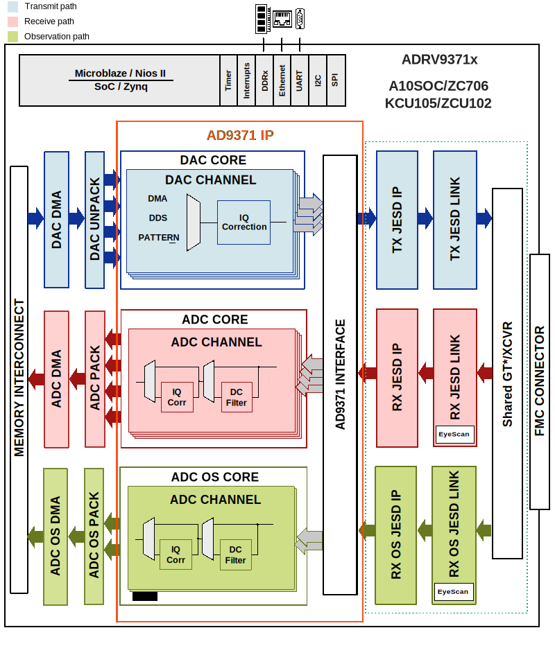

ADRV9371x HDL reference design
The ADRV371x HDL reference design is an embedded system built around a processor core either ARM, NIOS-II or MicroBlaze. The device digital interface is handled by the transceiver IP followed by the JESD204B and device specific cores. The JESD204B lanes are shared among the 4 transmit, 4 receive and 2 observation/sniffer receive data paths by the same set of transceivers within the IP. The cores are programmable through an AXI-lite interface. The delineated data is then passed on to independent DMA cores for the transmit, receive and observation/sniffer paths.
Supported boards
Supported carriers
Block design
Block diagram
The data path and clock domains are depicted in the below diagrams:
Example block design for Single link; M=4; L=4
{kind=link}
The Rx links (ADC Path) operate with the following parameters:
Rx Deframer parameters: L=2, M=4, F=4, S=1, NP=16, N=16
Sample Rate: 122.88 MSPS
Dual link: No
RX_DEVICE_CLK: 122.88 MHz (Lane Rate/40)
REF_CLK: 122.88 MHz (Lane Rate/40)
JESD204B Lane Rate: 4.915 Gbps
QPLL0 or CPLL
The ORx links (ADC Path) operate with the following parameters:
ORx Deframer parameters: L=2, M=2, F=2, S=1, NP=16, N=16
Sample Rate: 245.76 MSPS
Dual link: No
ORX_DEVICE_CLK: 122.88 MHz (Lane Rate/40)
REF_CLK: 122.88 MHz (Lane Rate/40)
JESD204B Lane Rate: 4.915 Gbps
QPLL0 or CPLL
The Tx links (DAC Path) operate with the following parameters:
Tx Framer parameters: L=4, M=4, F=4, S=1, NP=16, N=16
Sample Rate: 245.76 MSPS
Dual link: No
TX_DEVICE_CLK: 122.88 MHz (Lane Rate/40)
REF_CLK: 122.88 MHz (Lane Rate/40)
JESD204B Lane Rate: 4.915 Gbps
QPLL0 or CPLL
Digital Interface
The digital interface consists of 4 transmit, 2 receive and 2 observation/sniffer lanes running up to 6Gbps (default is 4Gbps). The transceivers then interfaces to the cores at 128bits @122MHz in the transmit and 64bits @122MHz for the receive channels. The sniffer/observation rates depends on the mode selected. The data is sent or received based on the configuration (programmable) from separate transmit and receive chains.
DAC Interface
The DAC data may be sourced from an internal data generator (DDS or pattern) or from the external DDR via DMA. The internal DDS phase and frequency are programmable. DAC unpack IP allows transfering data from the DMA to a reduced number of channels, at a higher rate.
ADC Interface
The ADC data is sent to the DDR via DMA. The ADC pack IP allows capturing only part of the channels.
Control and SPI
The device control and monitor signals are interfaced to a GPIO module. The SPI signals are controlled by a separate AXI based SPI core.
Configuration modes
The block design supports configuration of parameters and scales.
We have listed a couple of examples at section Building the HDL project and the default modes for each project.
Note
The parameters for Rx or Tx links can be changed from the system_project.tcl file, located in hdl/projects/adrv9371x/$CARRIER/system_project.tcl
The following are the parameters of this project that can be configured:
[RX/TX/RX_OS]_JESD_M: number of converters per link
[RX/TX/RX_OS]_JESD_L: number of lanes per link
[RX/TX/RX_OS]_JESD_S: number of samples per frame
CPU/Memory interconnects addresses
The addresses are dependent on the architecture of the FPGA, having an offset added to the base address from HDL (see more at CPU/Memory interconnects addresses).
Instance |
Zynq/Microblaze |
ZynqMP |
|---|---|---|
rx_adrv9009_tpl_core |
0x44A0_0000 |
0x84A0_0000 |
tx_adrv9009_tpl_core |
0x44A0_4000 |
0x84A0_4000 |
rx_os_adrv9009_tpl_core |
0x44A0_8000 |
0x84A0_8000 |
axi_adrv9009_rx_xcvr |
0x44A6_0000 |
0x84A6_0000 |
axi_adrv9009_tx_xcvr |
0x44A8_0000 |
0x84A8_0000 |
axi_adrv9009_rx_os_xcvr |
0x44A5_0000 |
0x84A5_0000 |
axi_adrv9009_tx_jesd |
0x44A9_0000 |
0x84A9_0000 |
axi_adrv9009_rx_jesd |
0x44AA_0000 |
0x84AA_0000 |
axi_adrv9009_rx_os_jesd |
0x44AB_0000 |
0x84AB_0000 |
axi_adrv9009_rx_dma |
0x7C40_0000 |
0x9C40_0000 |
axi_adrv9009_tx_dma |
0x7C42_0000 |
0x9C42_0000 |
axi_adrv9009_rx_os_dma |
0x7C44_0000 |
0x9C44_0000 |
axi_adrv9009_rx_clkgen |
0x43C1_0000 |
0x83C1_0000 |
axi_adrv9009_tx_clkgen |
0x43C0_0000 |
0x83C0_0000 |
axi_adrv9009_rx_os_clkgen |
0x43C2_0000 |
0x83C2_0000 |
SPI connections
SPI type |
SPI manager instance |
SPI subordinate |
CS |
|---|---|---|---|
PS |
spi0 |
AD9528 |
0 |
ADRV9371 |
1 |
GPIOs
GPIO signal |
Direction |
HDL GPIO EMIO |
Software GPIO |
|---|---|---|---|
(from FPGA view) |
Zynq MP |
||
ad9528_reset_b |
INOUT |
59 |
137 |
ad9528_sysref_req |
INOUT |
58 |
136 |
adrv9371_tx1_enable |
INOUT |
57 |
135 |
adrv9371_tx2_enable |
INOUT |
56 |
134 |
adrv9371_rx1_enable |
INOUT |
55 |
133 |
adrv9371_rx2_enable |
INOUT |
54 |
132 |
adrv9371_test |
INOUT |
53 |
131 |
adrv9371_reset_b |
INOUT |
52 |
130 |
adrv9371_gpint |
INOUT |
51 |
129 |
adrv9371_gpio_{00:18} |
INOUT |
50:32 |
128:110 |
Interrupts
Below are the Programmable Logic interrupts used in this project.
Instance name |
HDL |
Linux Zynq |
Actual Zynq |
Linux ZynqMP |
Actual ZynqMP |
|---|---|---|---|---|---|
axi_adrv9371_rx_os_jesd |
8 |
52 |
84 |
104 |
136 |
axi_adrv9371_tx_jesd |
9 |
53 |
85 |
105 |
137 |
axi_adrv9371_rx_jesd |
10 |
54 |
86 |
106 |
138 |
axi_adrv9371_rx_os_dma |
11 |
55 |
87 |
107 |
139 |
axi_adrv9371_tx_dma |
12 |
56 |
88 |
108 |
140 |
axi_adrv9371_rx_dma |
13 |
57 |
89 |
109 |
141 |
Microblaze
Instance name |
HDL |
Microblaze |
|---|---|---|
axi_adrv9371_rx_os_jesd |
8 |
8 |
axi_adrv9371_tx_jesd |
7 |
7 |
axi_adrv9371_rx_jesd |
15 |
15 |
axi_adrv9371_rx_os_dma |
14 |
14 |
axi_adrv9371_tx_dma |
13 |
13 |
axi_adrv9371_rx_dma |
12 |
12 |
Building the HDL project
The design is built upon ADI’s generic HDL reference design framework. ADI distributes the bit/elf files of these projects as part of the ADI Kuiper Linux. If you want to build the sources, ADI makes them available on the HDL repository. To get the source you must clone the HDL repository.
Then go to the project location, choose your carrier and run the make command by typing in your command prompt:
Linux/Cygwin/WSL
~$
cd hdl/projects/adrv9371x/zcu102
~/hdl/projects/adrv9371x/zcu102$
make
The following dropdowns contain tables with the parameters that can be used to configure this project, depending on the carrier used.
Parameter |
Default value of the parameters depending on carrier |
|---|---|
A10SoC/KCU105/ZC706/ZCU102 |
|
RX_JESD_M |
4 |
RX_JESD_L |
2 |
RX_JESD_S |
1 |
TX_JESD_M |
4 |
TX_JESD_L |
4 |
TX_JESD_S |
1 |
RX_OS_JESD_M |
2 |
RX_OS_JESD_L |
2 |
RX_OS_JESD_S |
1 |
A more comprehensive build guide can be found in the Build an HDL project user guide.
Other considerations
ADC - lane mapping
Due to physical constraints, Rx lanes are reordered as described in the following table.
ADC phy Lane |
FPGA Rx lane / Logical Lane |
|---|---|
0 |
0 |
1 |
1 |
ADC OBS phy Lane |
FPGA Rx lane / Logical Lane |
|---|---|
0 |
2 |
1 |
3 |
DAC - lane mapping
Due to physical constraints, Tx lanes are reordered as described in the following table.
DAC phy lane |
FPGA Tx lane / Logical lane |
|---|---|
0 |
1 |
1 |
2 |
2 |
3 |
3 |
0 |
Resources
More information
Support
Analog Devices, Inc. will provide limited online support for anyone using the reference design with ADI components via the EngineerZone FPGA reference designs forum.
For questions regarding the ADI Linux device drivers, device trees, etc. from our Linux GitHub repository, the team will offer support on the EngineerZone Linux software drivers forum.
For questions concerning the ADI No-OS drivers, from our No-OS GitHub repository, the team will offer support on the EngineerZone microcontroller No-OS drivers forum.
It should be noted, that the older the tools’ versions and release branches are, the lower the chances to receive support from ADI engineers.